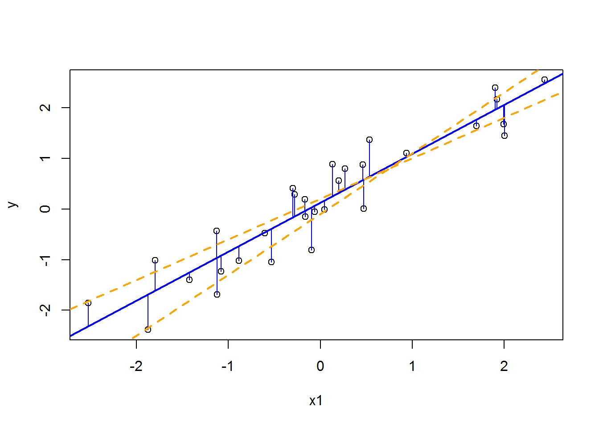
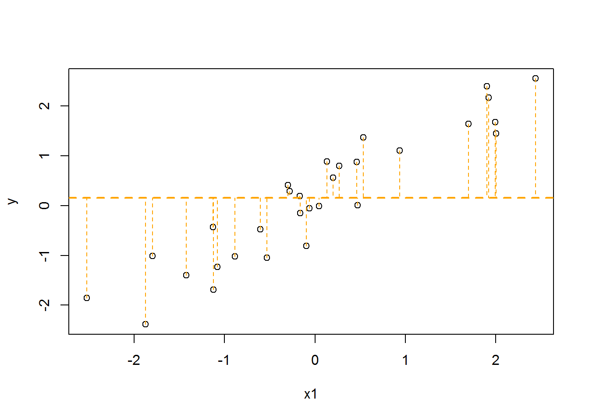

来自siminaboca Github的一篇文章，由Google翻译。
这当然有点夸张！ 这也取决于强调的方面，例如统计研究生课程。 我知道我自己的培训项目高度集中于把大量的统计数据看作是一种特殊情况，或者是某种线性回归模型的推广。 我很喜欢这个观点，只要我能和合作者合作，就尽量强调这一点，但我承认，有时你必须从特殊情况出发才能建立起整体。
回归概念与损失函数和条件均值和中值相关
“回归”一词目前以各种各样的方式使用。一般情况下，如果有一个称为结果变量或因变量的变量\(Y\)，以及一些其他称为解释变量或自变量的变量\(X_1\)，\(X_2\)等，则一个\(Y\)在\(X\)s上的回归可以是 给定\(X\)（或“以\(X\)为条件”）\(Y\)的“概率分布的任何特征” 。这些特征通常涉及分布的“平均”或“中心”的一些度量，例如均值或中值。
最简单的回归方法就是具有单一解释变量的线性回归。换句话说，试图通过散点图来绘制“最佳拟合线”。有很多方法来定义“最佳拟合”，而通常考虑的方法是基于二次损失函数quadratic loss function （也称为平方误差损失或\(L_2\)损失）。基本上，如果试图最小化平方和的误差，即真实结果Y和\(\hat{Y}\)上的拟合值之间的差异，解决方案是“常规usual” 的普通最小二乘法ordinary least squares (OLS)。拿这个例子来说，有一个单一的解释变量\(X_1\)，结果变量\(Y\)只是增加了一些噪音。回归OLS拟合标蓝色，拟合值与Y的真实值之间的线段也是蓝色。其他两行以橙色虚线显示。

误差平方为OLS拟合的总和6.19，而其他两条线的误差平方是7.58和10.19。
如果没有解释变量，则拟合线是平坦的，代表结果值的平均值（平均值）：

对于上面的例子，这显然是不合适的。事实上，在这种情况下，平方误差的总和是49.34！
一般来说，OLS有一些很好的属性，例如，如果噪声项定义为\(\epsilon = Y - \beta_0 - \beta_1 X_1\)，其中\(\beta_0\)和\(\beta_1\)是真正的截距和斜率线——是有限方差的独立同分布，OLS拟合是条件均值E(Y|X)的无偏估计（即其均值等于条件均值），实际上是 最小方差无偏估计量minimum-variance unbiased estimator。请注意，到目前为止，我还没有讨论Y的分布，甚至Y是否连续。然而，在噪声项（因此Y是以X为条件）正态分布的情况下，OLS也是条件均值E(Y|X)的最大似然估计（maximum likelihood estimator，MLE）。
为什么常常考虑二次损失函数的一个原因是因为数学运算非常好（可以使用通常的基于微积分的二阶导数测试来求解最大值）。如果存在更多的解释变量，这也可以很好地推广 - 我们可以将它们全部包含在矩阵X中，并且在一些多元微积分的帮助下基本上以相同的方式进行。然而，还有许多其他的方式来定义“最适合”。然而，也许有人有兴趣估计之外的Y|X分布的一个方面而非其平均值，比如它的中位数。中位数自然地连接到 绝对损失absolute loss（也称为\(L_1\)损失），同样，均值就联系到二次误差损失。在这种情况下，标准是最小化误差的绝对值的总和，也称为 最小绝对偏差（least absolute deviations，LAD）或最小绝对残差（least absolute residuals）。在没有解释变量的情况下，平面拟合线表示解释值的中值。如果我们更广义地看一个函数f，其中的值f(X)最为相似的Y，有相似的使用二次损失来定义，那么“最适合” 最大限度地减少预期的预测误差expected prediction error（EPE -见统计学习基础 Elements of statistical learning 第2.4节）是函数f(x) = E(Y|X=x)（条件均值）; 相反，如果使用绝对损失来定义，则为f(x)=中值median(Y|X=x)（条件中值）。一般来说，中值比均值方法更稳健，因为它们缺乏对异常值的依赖性，但由于不连续的求导复杂化了优化程序，数学变得更加困难。对于上面的例子，无论是最小化平方和还是误差的绝对值总和，结果都几乎相同：
##intercept and slope estimated via OLS利用OLS估计截距和斜率
coef(lm(y ~ x1))## (Intercept) x1
## 0.1263162 0.9645116library(quantreg)
##intercept and slope estimated via quantile regression with median (see below)利用分位数回归和中值估计截距和斜率
coef(rq(y ~ x1, tau=0.5))## (Intercept) x1
## 0.1218339 0.9931817类似地，如果使用 阶跃函数（0-1）损失step function (0-1) loss ，则结果为f(x) = mode(Y|X=x) (conditional mode)。请注意，均值，中位数和模式是描述连续分布的“中心”的最常用方式。
考虑除中位数之外的另一个分位数也可能是有意义的，当考虑具有不对称分布的变量（例如收入分配）时有时是这种情况。 分位数回归Quantile regression为此考虑了不同的损失函数; 用于中位数的损失函数等同于LAD。如果噪声项具有不对称的拉普拉斯分布，则在此获得的用于特定分位数的估计量就是其 MLE。对于本文档的其余部分，考虑到平方误差损失，我们通常会以“常规方式”使用“回归”。
更多关于OLS拟合：线性代数和几何解释
上面我们考虑了二维拟合线的特殊情况，其中只有一个解释变量，并估计了两个参数：“最佳拟合线”的斜率和截距。一般来说，可以考虑许多变量。通常将所有这些变量考虑在一个单一的矩阵\(X\)中，每个变量都作为列，每个样本作为一行，第一列通常由1组成，目标是估计一个“参数”\(\beta\)向量，所以结果\(Y\)是“尽可能接近”到\(X\beta\)（因此，\(\beta\)的第一个元素是截距）。在一定的线性代数假设下， 多元情况下的OLS有一个很好的封闭形式：\(\hat{\beta} = (X'X)^{-1}X'Y\)。这意味着拟合值是：\(\hat{Y}=X\hat{\beta} = X(X'X)^{-1}X'Y\)。矩阵\(X(X'X)^{-1}X'\)实际上是 投影矩阵在由X的列所跨越的空间上，这是另一种概念化\(\hat{Y}\)表示最接近向量是解释变量的线性组合的所有向量中的\(Y\)。我们再一次使用\(L^2\)损失定义“最接近的”，或者在线性代数术语中，最小化\(L^2\)的范数 \(||.||\)：\(\hat{\beta} = \arg\min||Y-X\beta||\)。值得注意的是，解\(X\beta = Y\)中的\(\beta\)实际上代表一个 超定系统overdetermined system 因此通常无法得到准确解——因此，我们寻找一种解决方案，给出一个“接近”Y的拟合，同时处于解释变量所跨越的空间中。
T检验、方差分析，及其他：线性模型中的假设检验
也许大多数人首先想到的统计方法是t检验。 学生氏两样本t-test 用于比较两个分布的均值，对于正态分布的随机变量或对于具有足够大的样本大小的连续随机变量，零假设表明它们是相等的。关于线性回归的一个强有力的事情是假定等式的两样本t检验实际上与线性模型相同，其中解释变量是定义组成员关系的0/1变量：
set.seed(380148)
n <- 10
##define the two random variables定义2个随机变量
##y1 is from a normal distribution with mean=0, sd=1
y1 <- rnorm(n,0,1)
##y2 is from a normal distribution with mean=0.5, sd=1
y2 <- rnorm(n,0.5,1)
##run a t-test!
t.test(y1,y2,var.equal = TRUE)##
## Two Sample t-test
##
## data: y1 and y2
## t = -0.66034, df = 18, p-value = 0.5174
## alternative hypothesis: true difference in means is not equal to 0
## 95 percent confidence interval:
## -1.5638050 0.8158546
## sample estimates:
## mean of x mean of y
## 0.2961889 0.6701641##create a single vector of outcomes and a vector indicating group membership表示组关系的向量
y <- c(y1,y2)
x1 <- c(rep(0,length(y1)),rep(1,length(y2)))
summary(lm(y~x1))##
## Call:
## lm(formula = y ~ x1)
##
## Residuals:
## Min 1Q Median 3Q Max
## -2.3130 -0.9469 0.1265 1.0192 1.7432
##
## Coefficients:
## Estimate Std. Error t value Pr(>|t|)
## (Intercept) 0.2962 0.4005 0.74 0.469
## x1 0.3740 0.5663 0.66 0.517
##
## Residual standard error: 1.266 on 18 degrees of freedom
## Multiple R-squared: 0.02365, Adjusted R-squared: -0.03059
## F-statistic: 0.436 on 1 and 18 DF, p-value: 0.5174我们可以看到，p值是相同的，估计的斜率实际上等于平均值之间的差异。由于OLS属性背后的一个假设是噪声项是相同分布的，这就意味着方差不等的情况不能直接放在这个框架中。但是，如果方差不相等，这意味着也许应该考虑其他解释变量，所以之后这些变量可以包含在回归模型中。
ANOVA也是同样的思想：要比较多组均值。拥有回归思维方式的好处之一是，用条件方法解释结果是非常容易的，它也允许一个统一的框架，它可以包括连续和离散的解释变量以及它们之间的相互作用，而不必求助于像双向ANOVA，ANCOVA等特殊术语
一般而言，我们可以通过执行F检验来测试多变量模型中参数的任何线性组合是否等于0 。这是一个强有力的方法，因为它包括两个系数相等的情况，当然，单个参数是否等于0有一个特殊情况。对于后一种情况，这种方法相当于使用$ t np-1 \(自由度，其中\) p $是不包括截距的参数的数量。因此，回归方法再一次考虑了一个更一般的框架，特殊情况自然就会出现。
The same idea holds in the case of ANOVA, where multiple group means are being compared. One of the benefits of having a regression mindset is that it very easy to interpret the results in terms of conditional means and it also allows for a unified framework which can include both continuous and discrete explanatory variables and interactions between them, without having to resort to special terminology like two-way ANOVA, ANCOVA, etc.
In general, we can test whether any linear combination of parameters in a multivariate model is equal to 0 by performing an F-test. This is a powerful approach, as it includes cases including the equality of two coefficients and of course, has a special case whether a single parameter is equal to 0. For this latter case, this approach is equivalent to using a t-test with \(n-p-1\) degrees of freedom, where \(p\) is the number of parameters, excluding the intercept. Thus, once again, the regression approach allows for a more general framework from which the special cases naturally fall out.
From weighted regression to generalized linear models
We mentioned before that one of the properties that is generally assumed for linear regression is that the noise terms are independent and identically distributed. In case this does not hold, an alterative to OLS is to use either weighted least squares (WLS) or generalized least squares (GLS) approaches. This means that if the variance-covariance matrix of the noise terms is \(W\), then the MLE solution is: \(\hat{\beta}=(X'W^{-1}X)^{-1}X'W^{-1}Y\). This is equivalent to minimizing \(\hat{\beta} = \arg\min(Y-X\beta)'W^{-1}(Y-X\beta)\), known as the Mahalanobis length, instead of \(\hat{\beta} = \arg\min||Y-X\beta||\) as before. If W has all off-diagonal terms equal to 0 (i.e. the noise terms are independent), this is the WLS estimate, otherwise it is the GLS estimate.
What happens if the outcome is not normally distributed? Here we come to the generalized linear model. In the case in which the outcome Y is from a class of distributions known as the exponential family - which include the normal, exponential, and Bernoulli distributions - instead of trying to directly estimate the conditional mean \(E(Y|X)\) as a linear function \(X\beta\), it is generally more convenient to estimate a transformation of this mean, \(g[E(Y|X)]\). This is because, for example, for a 0/1 outcome, using just the OLS will often result in fitted values outside of the [0,1] range, but using a link function g that transforms the (0,1) range corresponding to the probability of success in a Bernoulli distribution into the entire real line solves this problem. If the link function is the log-odds (logit), we find ourselves looking at logistic regression. In the general case, we cannot obtain a closed form MLE solution, but by applying a first-order Taylor approximation, we obtain an algorithm that performs iteratively reweighted least squares (IRLS), where the matrix \(W\) is related to the derivative of the inverse link function.
Smoothing and regression
So far we have discussed fitting linear models between an outcome and explanatory variables, but what happens if the relationship is clearly nonlinear? One option is to add more explanatory variables, including polynomial terms, and fit a linear function to those - for example, instead of having \(X_1\) as an explanatory variable, can consider \(X_1\) and \(X_1^2\), so that we fit the model \(E(Y|X_1) = \beta_0+\beta_1X_1+\beta_2X_1^2\) instead of \(E(Y|X_1) = \beta_0+\beta_1X_1\). Note that the function is still linear in the explanatory variables that are considered. More flexibility can be obtained by using regression models that have piecewise polynomial terms, known as splines. For the case of a single explanatory variable, another popular approach is local regression (loess), which fits simple linear regression using a moving window, resulting in a smooth function. Many other advanced approaches are built on these concepts, including smoothing splines, which place knots at every observation but have a “roughness penalty” to reduce overfitting and generalized additive models (GAMs) which fit smooth functions for each separate explanatory variable.
Regression and machine learning
Machine learning, also known as statistical learning, focuses on “learning from the data” in order to either predict the outcomes for new data points (supervised learning) or to find patterns in the data (unsupervised learning). “Predicting” in this case means obtaining the values \(\hat{Y}\) for new points which are not in the dataset on which the model was fitted (the “training data”), using the model parameters estimated from that dataset. For supervised learning tasks, any of the regression approaches described above can be considered, noting that in machine learning, the main goal is having a low prediction error for new points, as opposed to performing statistical inference. If the number of predictors is very large, potentially larger than the number of samples, regularization approaches like ridge regression, LASSO, or elastic net can be used to reduce overfitting. Many more approaches exist, some which build on or are similar to regression. For example, support vector machines (SVMs) for continuous outcomes are equivalent to regression models with a regularization term and the hinge loss instead of the quadratic loss function. Similarly, neural networks can be seen as extensions of linear or logistic regression. It is also increasingly common in machine learning to use ensemble methods that combine several approaches and perform a type of averaging or “voting” to obtain the final predicted values.